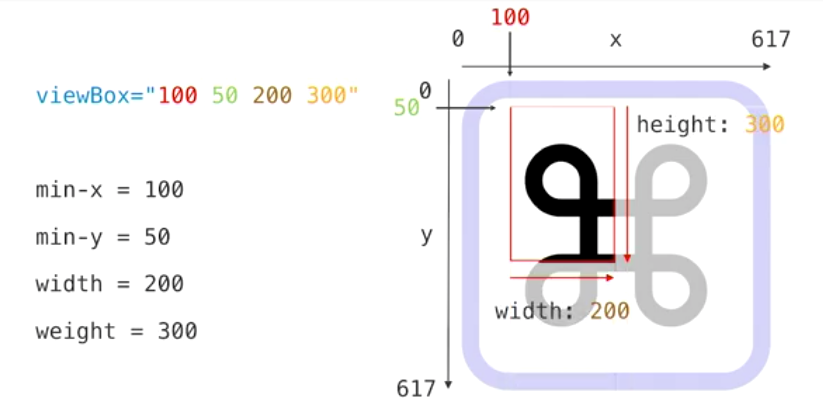

Raster vs. Vector
SVG: An XML vector graphics format -
Styled with CSS & controlled with JS.
Native element code:
← Inspect ElementMCC: Section 1
SVG: An XML vector graphics format -
Styled with CSS & controlled with JS.
Native element code:
← Inspect Element<use><svg> ... </svg>
<img src="svg_file_name.svg" /><object> (not common)trade offs: displaying as img tag (no dom) vs inline (dom element access)

The only required attrs for svg opening tag:
<svg
xmlns="https://www.w3.org/2000/svg"
viewBox="0 0 500 500"
>
</svg>viewBox="min-x, min-y, width, height"Redefine what portion of the svg is visible.
linerectcircleellipsepolylinepolygonpathtext<line x1="0" y1="0" x2="2" y2="2" /><rect x="5" y="5" width="50" height="50" rx="1" ry="1" /><circle cx="5" cy="5" r="2" /><ellipse cx="5" cy="5" rx="3" ry="2" />
Takes a series of number pairs separated by a space with the pair delimited by a comma
<polyline points="n,n n,n" /><polygon points="n,n n,n" /> points="1,1 2,3 4,5 7,2"
The difference is the polygon draws a final stroke to close the shape automatically
The most abstract, low level shape… makes sense to computers but is very complicated for a human to understand
Typically need tools to write this one
<path d="special syntax" />M 4 4tells the browser to lift up its imaginary pen and move it to the point (4, 4).h -16 means from the current pen location, draw a line extending 16px to the left.This is easier to remember than it looks:
<text x="0" y="0" dx="2" dy="2">Example Text</text>selectable and stylable unlike other image text
Uses the fill color attribute
dx dy are essentialy positional transformation attrs
Text doesn't wrap nicely in svg though… can use tspan to position new lines
<tspan x="0" y="12">New line of text</tspan>stroke="blue"stroke-width="4"fill="white"transform="translateX(20px)"transform-origin="translateX(20px)"Manipulate shapes with transform css rules as before
In svg you can define the transform as an attribute (no style attr needed)
Pitfall of transform: the origin is the 0, 0 point of the parent svg
Use transform-origin to change the axis of rotation
(set it to the x+width/2, y+height/2 coords)
stroke: color valuestroke-width: numberstroke-linecap: butt, square, round
MDN
stroke-linejoin: miter, round,bevel
MDN
stroke-miterlimit: numberstroke-opacity: 0-1stroke-dasharray="10,10" // length of dash, length of gap can be a repeated pattern: "10, 10, 1, 1, 20, 50"
stroke-dashoffset="number"<g></g>
<svg
xmlns="https://www.w3.org/2000/svg"
viewBox="0 0 500 500"
>
<g class="axis-lines">
<line x1="0" y1="50%" x2="100%" y2="50%" />
<line x1="50%" y1="0" x2="50%" y2="100%" />
</g>
<g class="points">
<circle cx="5" cy="5" r="2" />
<circle cx="15" cy="15" r="2" />
<circle cx="25" cy="25" r="2" />
<circle cx="35" cy="35" r="2" />
</g>
</svg><svg aria-labelledby="title-id" aria-describedby="desc-id">
<title id="title-id">Descriptive title for svg image</title>
<desc id="desc-id">Description of image (like an alt tag)</desc>>
<text role="presentation" role="hidden">Text that we don't want read by screen reader</text>
</svg>
You can add <title> and <desc> inside a <use> declaration as well